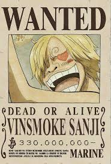

Trama
Fama, Poder y Riquezas, eso fue lo que dejo Gold Roger antes de morir. Tras eso todo el mundo fue en busqueda de ese tesoro, dando inicio a la gran era de la pirateria, todos con un objetivo en comun, encontrar el One Piece
Personajes
Monkey D. Luffy
Monkey D. Luffy es el protagonista principal de la serie, un joven pirata que ha comido la fruta del diablo "Goma Goma no Mi" y tiene la capacidad de estirar y manipular su cuerpo como si fuera de caucho. Es fuerte, valiente y tiene un gran apetito. Su objetivo es encontrar el One Piece y convertirse en el rey de los piratas.
Roronoa Zoro

Roronoa Zoro es el primer miembro de la tripulación de Luffy y el espadachín de la tripulación. Es conocido como el "Pirata Hunter" y es uno de los tres grandes guerreros de la tripulación. Su habilidad principal es su maestría en la esgrima, es capaz de luchar con tres espadas al mismo tiempo y tiene una gran resistencia a los daños. Ha tenido algunas de las mejores peleas de la serie, como contra Mihawk en el barco Baratie, contra Kaku en Skypiea y contra Pica en Dressrosa. Su historia es la de un joven que siempre ha sido solo y ha estado en busca de un rival digno, hasta que se unió a Luffy y se convirtió en un miembro valioso de la tripulación y con el objetivo de ser El Rey de los Espadachines .
Nami
Nami es la navegante de la tripulación y una de las primeras personas en unirse a Luffy. Es una excelente cartógrafa. También es una luchadora experta con su Clima Tact y una persona muy astuta. Su objetivo es dibujar un mapa del mundo entero y crear el primer mapa mundial.
Go.D Usopp
Usopp es un miembro de la tripulación de Luffy y el tirador de la tripulación. Es un gran mentiroso y un cobarde, pero cuando se trata de proteger a sus amigos, se muestra valiente y fuerte. Es conocido como God Usopp, ya que es el personaje mas poderoso de la serie... o al menos eso dicen los rumores. Su sueño es ser Un guerrero valiente y honorable
"Vinsmoke" Sanji
Sanji es el cocinero de la tripulación de Luffy, apodado "Black Leg" Sanji. Es un gran cocinero y un experto en combate. En el arco de Whole Cake, Sanji se enfrenta a su familia, los Vinsmoke, que intenta obligarlo a casarse con una de las hijas de Big Mom . A pesar de que su familia lo ha rechazado y lo han considerado como el "hijo perdido", Sanji se muestra orgulloso de si mismo. Con la ayuda de Luffy y sus amigos, Sanji consigue escapar de su familia y vuelve a unirse a la tripulación de Luffy. Su sueño es encontrar el All Blue
Tony Tony Chopper
Tony Tony Chopper es un personaje de la serie, un reno doctor que ha comido la fruta del diablo "Hito Hito no Mi" y tiene la capacidad de transformarse en un ser humanoide. Chopper es un miembro de la tripulación de Luffy y es el médico de la tripulación. Chopper creció en la isla Drum y fue criado por el Dr. Hiriluk, que lo consideraba como su hijo. Después de la muerte de Hiriluk, Chopper se unió a la tripulación de Luffy y se convirtio en un miembro muy valioso para la tripulación. Chopper tiene una gran inteligencia, lo que lo hace un gran aliado en batalla. A pesar de que Chopper es un reno, tiene un gran corazón y es muy leal a sus amigos. Su sueño es poder encontrar una cura a todas las enfermedades en el mundo
Nico Robin
Nico Robin es una arqueóloga y una de las integrantes de la tripulación de Luffy. Ha comido la fruta del diablo "Hana Hana no Mi" y tiene la capacidad de crear copias de partes de su cuerpo. Robin es una persona muy astuta y tiene una gran inteligencia. Su historia es la de una niña que creció en una familia de eruditos, pero debido a un acontecimiento muy tragico lo pedrio todo. Fue perseguida por la marina hasta que encontro un refugio en la tripulación de Luffy. Su sueño es encontrar el conocimiento absoluto y descubrir la verdad sobre el siglo vacio y la historia del mundo.
Franky
Franky es un cyborg y el carpintero de la tripulación de Luffy. Tiene la habilidad de crear objetos y estructuras con su habilidad de ingeniero y su capacidad de construcción. Franky es un gran apoyo para la tripulación de Luffy, ya que es capaz de crear barcos y estructuras de gran tamaño, lo que ha sido clave en varios momentos de la serie. Su sueño es construir un barco que pueda viajar a cualquier lugar del mundo.
Brook
Brook es un esqueleto que ha comido la fruta del diablo "Yomi Yomi no Mi" y tiene la capacidad de revivir. Pertenecia a un grupo de piratas que fueron emboscados y murieron. Después de morir, su alma vagó por el mundo, hasta que encontró su cuerpo en el Grand Line y lo revivió. Su sueño es encontrar a su amigo Laboon y hacer una canción que sea recordada por la historia.
Jimbei
Jimbei es un pez-hombre y un antiguo miembro de los Siete Guerreros del Mar. Es un gran luchador y tiene la capacidad de hablar con los peces. Su sueño es unir a los peces-hombre y a los seres humanos y vivir en armonía. Después de la batalla de la isla Gyojin, se unió a la tripulación de Luffy y se convirtió en un miembro valioso.